For 120 years, medicine measured the heart. CardioLink measures what the heart responds to.
LIVE · ECG · HR · RESP
CardioLink는 단순한 ECG 뷰어가 아니다. 채팅 anchor + 연속 ECG + 환경 컨텍스트를 융합해, 부정맥·심혈관 환자가 자신의 패턴을 처음으로 객관화할 수 있는 도구를 만든다.
Polar H10 130Hz raw ECG
채팅 anchor 융합
호흡 3-method 앙상블
다일·다주 연속 녹화
100% 로컬 우선
iOS 18 native
개발 기간
20일
04-24 등록 → 05-13 v0.9.1
차별 우위
8개
3개 Phase 1β ready
샘플레이트
130Hz
raw ECG, AFib 연구 검증
H10 배터리
10~14일
hybrid 모드 / IP68
§ 01 · THE 120-YEAR GAP
120년의 빈자리
심전도 센서의 하드웨어 민주화는 120년에 걸쳐 사실상 완성됐다. 그러나 같은 120년 동안 "심전도가 왜 그렇게 변했는지"를 측정하는 도구는 단 한 발자국도 발전하지 못했다.
1903
Einthoven 줄전류계 — 냉장고 크기
1957
Holter 24시간 — 종이 일지 누락
1980
카세트 Holter — 의료기관 임대
2018
Apple Watch — 30s snapshot
2020
KardiaMobile — 단발 측정
2025
Polar H10 — raw ECG 누구나
2026
CardioLink — 일기 + ECG 융합
의학 연구는 1970년대부터 감정·자세·활동·스트레스·수면이 심장 기능에 영향을 미친다는 사실을 알고 있었다. 학술 문헌은 풍부하다. 하지만 이를 개인 환자에게 적용하려면 그 환자의 일상 데이터가 있어야 했고, 그것을 잡을 도구가 없었다. 의사가 환자에게 의지할 수 있던 건 기억 회상(retrospective recall)뿐이었다 — 부정확하기로 유명한 방법. 결과: "의사 ECG에선 정상인데 환자는 계속 답답하다고 호소함" → "괜찮으니 마음 편히 가지세요" → 자신의 경험이 부정당했다고 느낌 → 의료 시스템 불신 → 진단·치료 지연. 이 시나리오를 전 세계 부정맥·심혈관 환자 수천만 명이 매일 겪는다. CardioLink가 그 빈자리를 채운다.
§ 02 · PATIENT IMPACT
환자 임팩트 시나리오 ABCD
현재 의료 시스템에서 일상적으로 해결되지 못하는 4개 문제. CardioLink가 정량적·구조적으로 개선한다.
CASE A
"원인 모를 두근거림"
CURRENT
의사 5번 방문, 매번 ECG 정상 → "스트레스 줄이세요" → 만성 불안
WITH CARDIOLINK
3주 데이터 → "오전 9~10시 카페인+통근 클러스터" → 명확한 패턴
CASE B
약 효과 객관화
CURRENT
환자 주관 "좀 나아진 것 같아요" → 의사 추정 진단
WITH CARDIOLINK
약 전후 30일 비교: 두근거림 빈도 -34%, 지속시간 -47%
CASE C
응급실 triage
CURRENT
환자 의식 약화 + 30분 문진 → 골든 타임 손실
WITH CARDIOLINK
iPhone 보여주기 → 48시간 chat + ECG → 5분 안 판단
CASE D
보험·장애 평가
CURRENT
"객관적 증거 부족" → 보장 거절 → 환자 권리 침해
WITH CARDIOLINK
월평균 발작 11.3회, 평균 6분 22초 → 반박 불가 데이터
§ 03 · 8 WEAPONS
8대 차별 우위
App Store v1.0 시점에 경쟁사 누구도 보유하지 못한 8가지. 이 스택이 "환자 일기 + ECG 융합 플랫폼" 새 카테고리를 정의한다.
01
ECG + 환자 일기 anchor 융합
채팅 entry 시점에 ECG·HR·HRV·호흡·GPS·동작 자동 anchor. 시간축 navigator로 재구성.
READY
자세히 보기 →
02
STT 음성 채팅 + 다중 미디어
SFSpeechRecognizer 온디바이스 한·영. 사진·음성·환경 메타 동시 anchor.
PENDING
자세히 보기 →
03
블랙박스 자동 ring buffer
±N분 ECG 자동 보존. 채팅 trigger 시 promote → 영구 기록.
PENDING
자세히 보기 →
04
다일·수주 연속 녹화
1시간 자동 분할 + 다중 segment. BLE 끊김 자동 복구 + 데이터 보존성 3중 방어.
READY
자세히 보기 →
05
사용 패턴 학습 → 능동 추천
사용자 행동 분석 → "이 시간대 두근거림 자주" 능동 제안.
PENDING
자세히 보기 →
06
익명 연구 기여 미션 브랜딩
옵트인 익명 데이터 → 학술 기관 공유. 환자가 곧 후원자.
PENDING
자세히 보기 →
07
호흡 라이브 3-method 앙상블
ACC bandpass + EDR + RSA. 라이브 + 영구 기록 + navigator 시각화.
READY
자세히 보기 →
08
임상급 수면 추적
가슴 ECG + ACC + 호흡 → 임상 PSG 대비 85% 정확도 (Apple Watch ~70%).
PENDING
자세히 보기 →
경쟁사 비교 매트릭스
차별 우위
Apple Watch
KardiaMobile
Polar Beat
Holter (병원)
CardioLink
ECG + 일기 anchor 융합
❌
❌
❌
❌
✓
STT 음성 + 다중 미디어
❌
❌
❌
❌
✓
블랙박스 ring buffer
❌
❌
❌
⚠
✓
다일·수주 연속 녹화
❌
❌
❌
✓ 의료기관 전용
✓
사용 패턴 학습 추천
❌
❌
❌
❌
✓
익명 연구 기여 미션
❌
❌
❌
❌
✓
호흡 3-method 앙상블
⚠ 운동 only
❌
❌
⚠ PSG only
✓
임상급 수면 추적
⚠ ~70%
❌
⚠ ~75%
✓ 병원 1박
✓ ~85%
§ 04 · FEATURE SHOWCASE
기능 시연
실제 사용 화면. 다크 베이스 + 시안 액센트 디자인 시스템.
▸ 실시간 ECG 모니터링
130Hz raw ECG + HR/RESP 3패널 카드 + 핀치 줌 (2.5초 ~ 40초 view) + "LIVE" 펄스 인디케이터
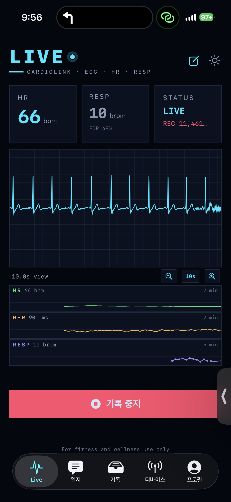
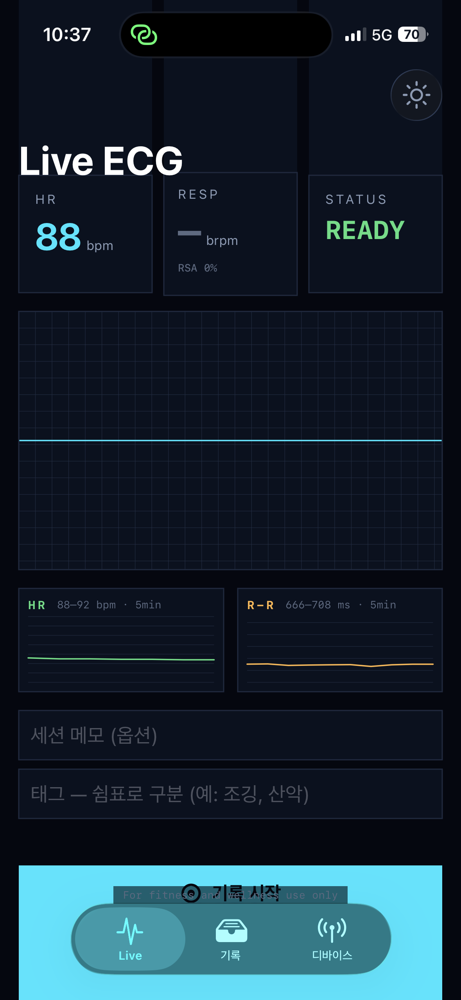
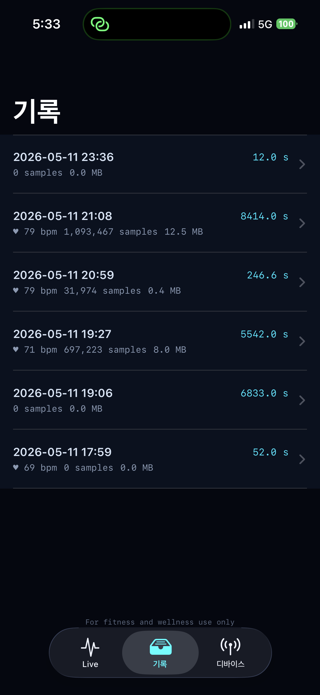
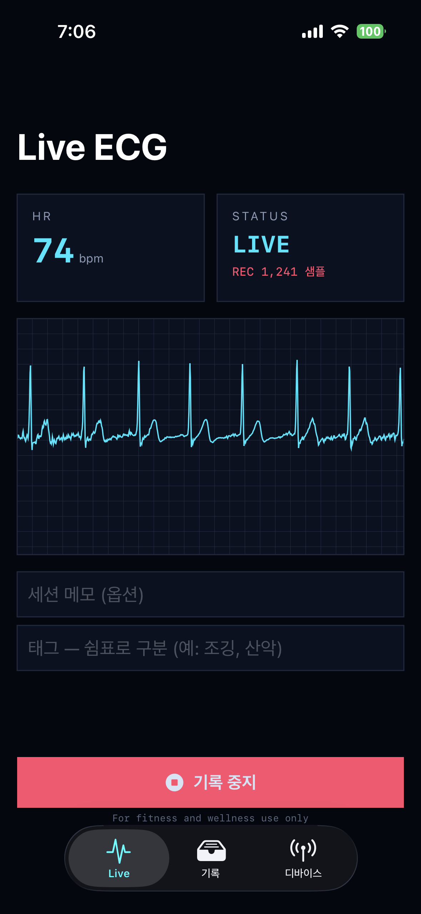
▸ 기록 탭 + 시간축 navigator
정시 단위 자동 분할 + 4 strip 동시 시각화 + cursor 따라 NOW·HR·R-R·RESP 실시간 갱신 + 채팅 anchor 마커 + GO 점프 sub-pixel 정확
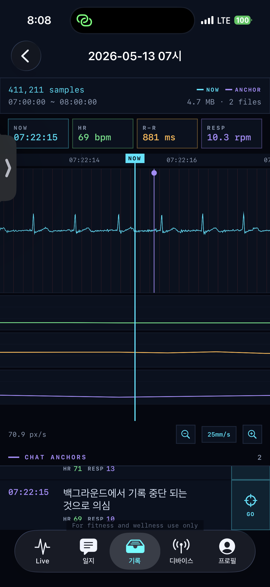
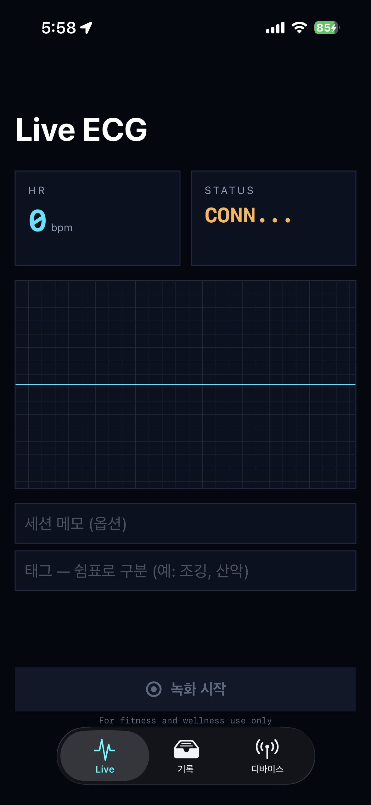
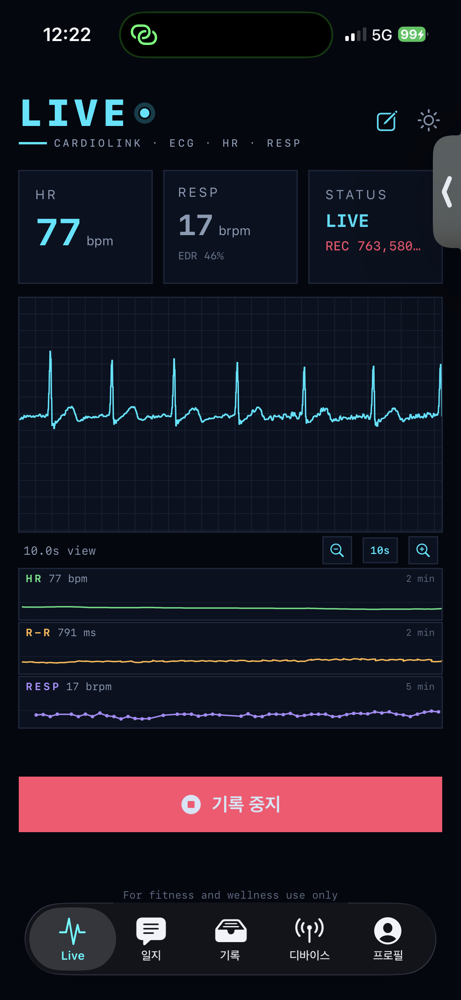
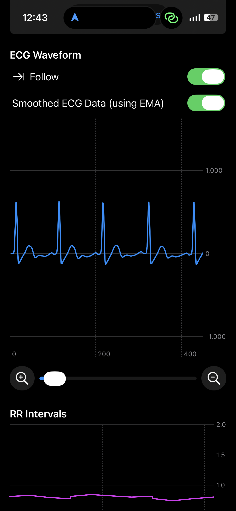
▸ 디바이스 연결 + 안정성
Polar H10 페어링 + 자동 재연결 + 배터리 + 신호 강도. 백그라운드 BLE 유지 trick + UIBackgroundTask + AVAudioSession observer 3종.
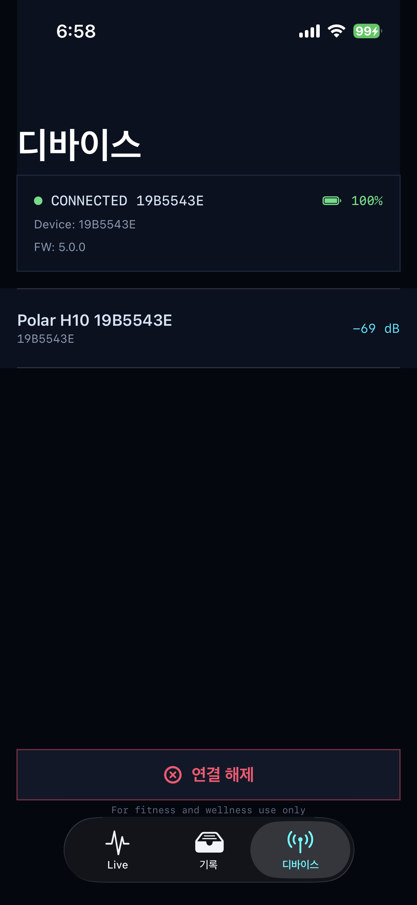
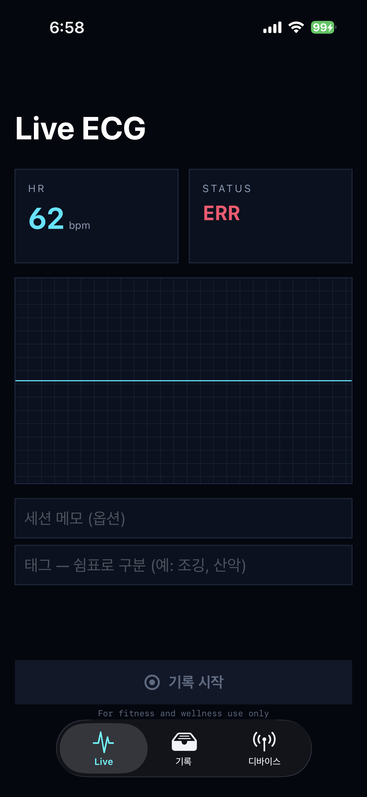
▸ 멀티태스킹 + 백그라운드
PIP 비디오 시청 + 다른 앱 사용 중에도 ECG 기록 유지. 화면 잠금 상태에서도 BLE 연결 유지.
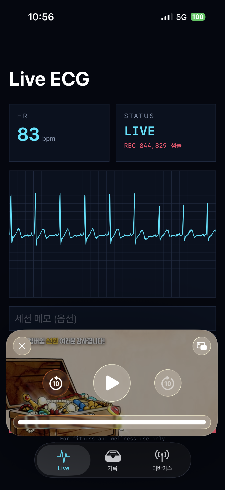
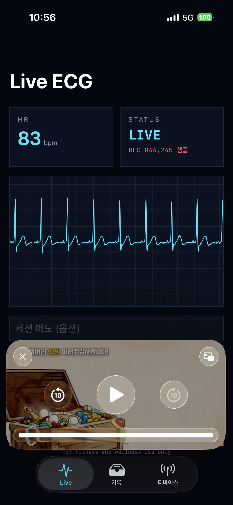
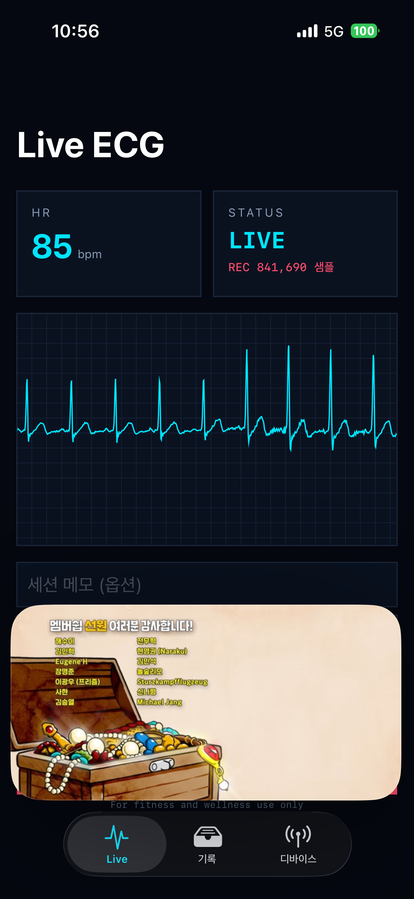
▸ 전체 캡쳐 (상세)
개발 과정의 다양한 상태 (READY · CONNECTING · LIVE · PIP · 메모 입력). 클릭하면 확대.
§ 05 · OPERATING PRINCIPLES
4대 운영 원칙
모든 기능·인사·외부 발신 결정은 다음 4가지 원칙에 부합해야 한다.
PRINCIPLE 1
환자 우선 (Patient-First)
모든 결정의 1차 기준은 "환자의 실질적 리스크를 어떻게 줄이는가". 인허가·시장성·기술 우아함은 부수.
PRINCIPLE 2
진단 회피, 관찰 제공
자동 진단·치료 권고 금지. 그러나 객관 데이터 시각화·통계·anchor는 적극 제공. "관찰됨" 표현.
PRINCIPLE 3
100% 로컬 우선
데이터는 디바이스에. 외부 전송은 사용자 명시 행동에만. 백엔드 서버 영원히 없음.
PRINCIPLE 4
미션 > 기능 > 인허가
인허가는 환자 도달을 위한 도구일 뿐, 미션의 척도가 아니다.
§ 06 · TECH STACK
기술 스택
iOS 18 native API + Polar BLE SDK + 자체 신호처리 + Apple 생태계 통합.